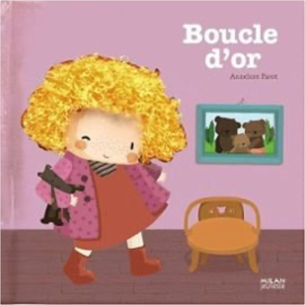
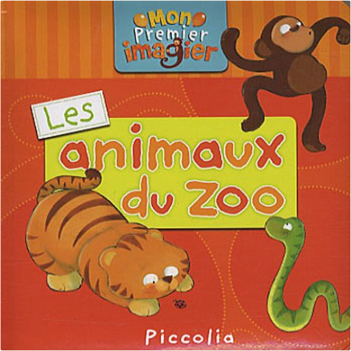

Books
Movies
Albums
Videogames
Games
BD
BD Camille
Blu-ray
Business
Camille
Comics
Cooking
Lego
Manga
Pauline
Photography
Star Wars
T'choupi
Travel
TV Shows
Un livre dont vous êtes le héro
Vinyl
Walt Disney
8
9
10
11
12
mia et le lion blanc
gilles de maistre
mon amour
astrid desbordes & pauline martin
mini-loup, tome 13 : fête halloween
philippe matter
Les petits livres de la nature - Gros mammifères
David Melbeck
le loup - qui voyageait dans le temps / qui voulait faire le tour du monde
orianne lallemand, éléonore thuillier
riverdale : the day before
micol ostow

contes et comptines à toucher - boucle d'or
annelore parot
allô ? c'est léo...
piccolia

les animaux du zoo
piccolia
contes et comptines à toucher - le bon roi dagobert
deborah pinto
mes premières découvertes : le cheval
pierre probst
zazie dans le métro
raymond queneau
8
9
10
11
12


 Made with Delicious Library Made with Delicious Library
Made with Delicious Library Made with Delicious Library